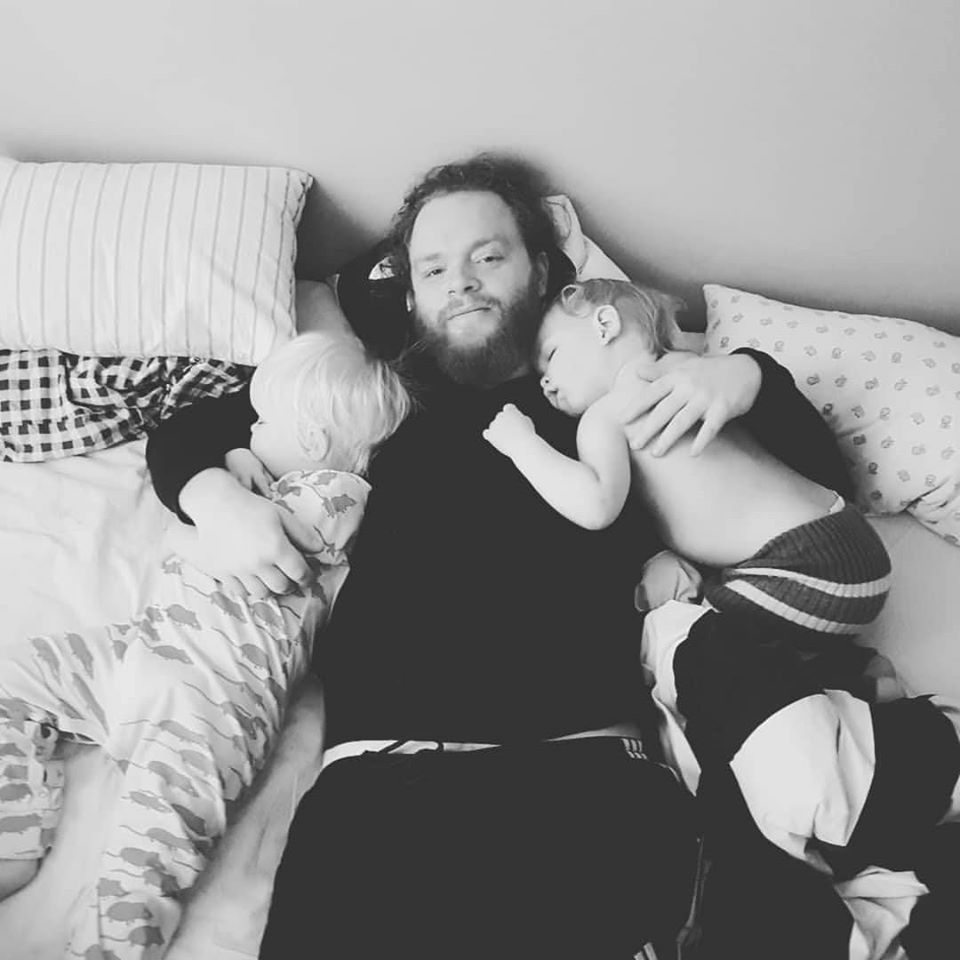

My report page in the course Development for the web

My name is Fredrik Lemón Larsson. I will soon turn 40. I have a family of a wife and 3 kids and we live north of Bromölla in an area called Norreskog. My previous education is in engineering and as a comissioned naval officer. I have served in the Royal Swedish Navy for 19 years and am now in the process of finishing a bachelor degree in computer science
My hobbies are woodwork, coding and renovating things. But most of my spare time is spent with my childern and family